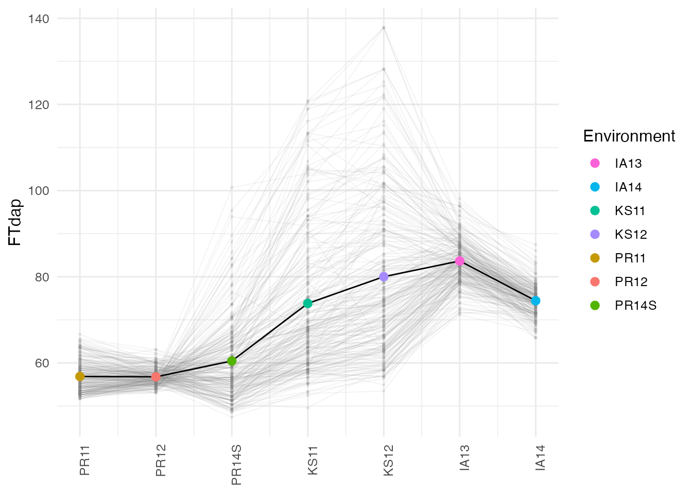
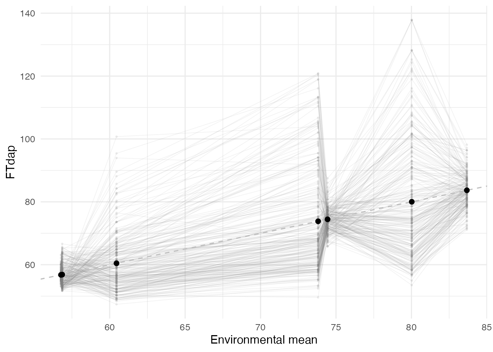
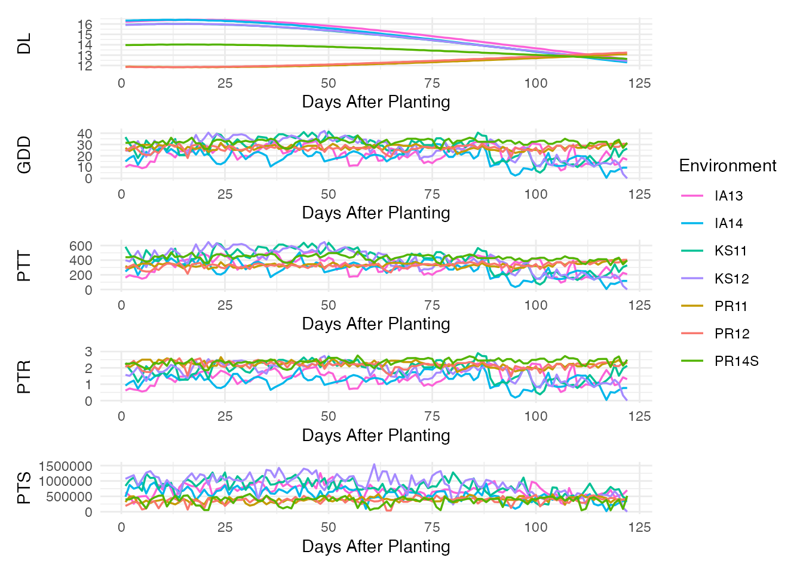
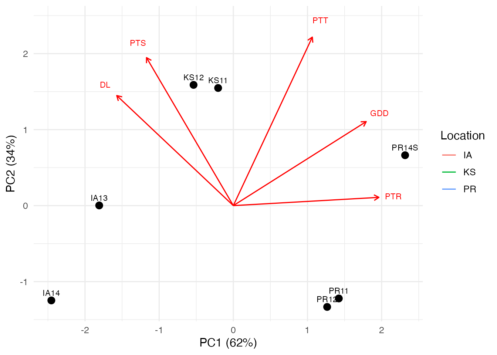
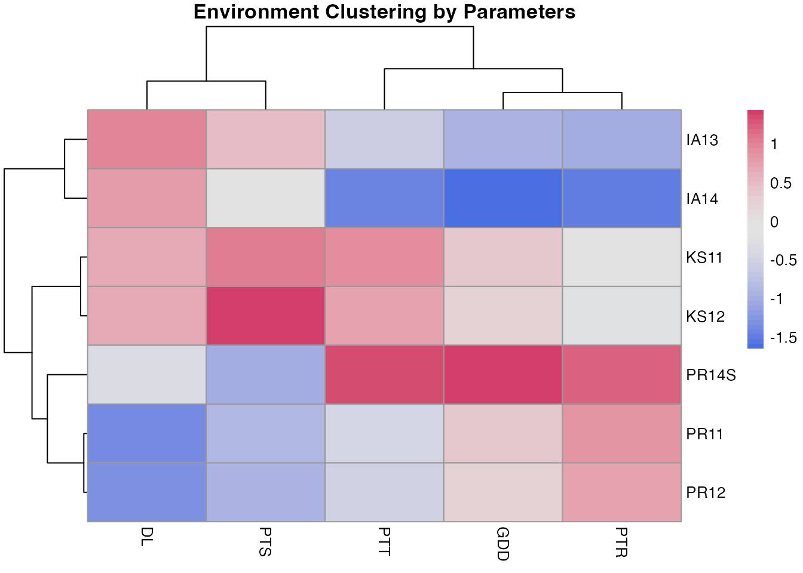

Data Exploration
data-exploration.RmdThis vignette walks through the data preparation and exploratory visualization steps that precede a CERIS search. We use the built-in sorghum dataset throughout.
library(runCERIS)
sorghum <- load_crop_data("sorghum")
traits <- sorghum$traits
env_meta <- sorghum$env_meta
env_params <- sorghum$env_paramsPreparing Trait Data
Raw trial data typically contains multiple replicates (lines) per
environment. prepare_trait_data() averages across
replicates within each environment and returns a tidy data frame with
one row per line per environment:
exp_trait <- prepare_trait_data(traits, trait = "FTdap")
str(exp_trait)
#> 'data.frame': 1659 obs. of 3 variables:
#> $ line_code: chr "E10" "E100" "E101" "E102" ...
#> $ env_code : chr "IA13" "IA13" "IA13" "IA13" ...
#> $ Yobs : num 89.7 84.3 83.5 78.7 92.4 ...
head(exp_trait)
#> line_code env_code Yobs
#> 1 E10 IA13 89.73960
#> 2 E100 IA13 84.28180
#> 3 E101 IA13 83.53581
#> 4 E102 IA13 78.66140
#> 5 E103 IA13 92.39830
#> 6 E104 IA13 87.26640The result has three columns: line_code,
env_code, and Yobs (the observed trait value).
This is the starting point for all downstream analyses.
Computing Environmental Means
compute_env_means() calculates the mean trait value per
environment and merges in the environment metadata. Environments are
ordered by their mean, which reveals the range of environmental
effects:
env_mean_trait <- compute_env_means(exp_trait, env_meta)
str(env_mean_trait)
#> 'data.frame': 7 obs. of 8 variables:
#> $ env_code : chr "PR12" "PR11" "PR14S" "KS11" ...
#> $ meanY : num 56.8 56.9 60.5 73.8 74.4 ...
#> $ env_notes : int 2 1 7 3 6 4 5
#> $ lat : num 18 18 18 39.2 42 ...
#> $ lon : num -66.8 -66.8 -66.8 -96.6 -93.6 ...
#> $ PlantingDate: chr "2011-12-12" "2010-12-04" "2014-06-05" "2011-06-08" ...
#> $ TrialYear : int 2011 2010 2014 2011 2014 2012 2013
#> $ Location : chr "PR" "PR" "PR" "KS" ...
env_mean_trait
#> env_code meanY env_notes lat lon PlantingDate TrialYear Location
#> 1 PR12 56.77317 2 18.0373 -66.7963 2011-12-12 2011 PR
#> 2 PR11 56.85371 1 18.0373 -66.7963 2010-12-04 2010 PR
#> 3 PR14S 60.45186 7 18.0373 -66.7963 2014-06-05 2014 PR
#> 4 KS11 73.81378 3 39.1836 -96.5717 2011-06-08 2011 KS
#> 5 IA14 74.44027 6 42.0308 -93.6319 2014-06-10 2014 IA
#> 6 KS12 80.02100 4 39.1836 -96.5717 2012-06-07 2012 KS
#> 7 IA13 83.67172 5 42.0308 -93.6319 2013-06-05 2013 IAThe resulting data frame includes one row per environment with
meanY (the environmental mean), plus all columns from
env_meta (latitude, longitude, planting date, etc.).
Wide-Format Line-by-Environment Matrix
For some analyses it is useful to have a wide-format matrix with
genotypes in rows and environments in columns.
prepare_line_by_env() creates this from the prepared trait
data and the environmental means:
line_env <- prepare_line_by_env(exp_trait, env_mean_trait)
head(line_env)
#> line_code PR12 PR11 PR14S KS11 IA14 KS12 IA13
#> 1 E10 53.1187 53.4805 82.8025 95.5120 77.3756 107.9397 89.73960
#> 2 E100 60.0257 66.6417 64.0564 67.8710 77.3756 69.3835 84.28180
#> 3 E101 56.9559 58.7449 65.3437 80.0534 75.4550 87.6977 83.53581
#> 4 E102 56.5722 54.3579 60.0090 72.0880 70.1734 73.2391 78.66140
#> 5 E103 53.8861 54.7966 77.9528 120.8179 77.8557 137.8208 92.39830
#> 6 E104 56.5722 53.4805 64.8587 110.5096 73.5344 95.4089 87.26640Each cell contains the observed trait value for that line in that environment. The environments (columns) are ordered by their environmental mean.
Visualizing Geographic Patterns
plot_geo_order() displays the trait distribution for
each environment, ordered by geographic or environmental-mean
information. This is a useful first look at whether GxE patterns follow
a spatial gradient:
env_colors <- setNames(
scales::hue_pal()(nrow(env_mean_trait)),
env_mean_trait$env_code
)
plot_geo_order(exp_trait, env_mean_trait, trait = "FTdap", env_colors = env_colors)
Look for environments that shift in rank relative to others — these indicate crossover GxE interactions that CERIS is designed to dissect.
Trait Means Across Environments
plot_env_means() shows individual genotype performance
against the environmental mean. Lines that cross each other indicate
rank changes across environments, the hallmark of GxE:
plot_env_means(exp_trait, env_mean_trait, trait = "FTdap")
A fan-shaped pattern indicates scaling (variance heterogeneity) across environments. Crossing lines indicate qualitative GxE interactions.
Daily Environmental Factor Profiles
plot_env_factors() displays the daily time series of
environmental parameters for all environments. This reveals how
conditions diverge across sites and seasons:
params <- c("DL", "GDD", "PTT", "PTR", "PTS")
plot_env_factors(env_params, params = params, env_colors = env_colors)
Each panel shows one parameter over days after planting. Environments are color-coded. Look for parameters that show clear separation among environments — these are good candidates for explaining GxE variation.
PCA Biplot of Environments
plot_pca_biplot() performs PCA on windowed environmental
parameters and projects environments into a reduced space. This gives an
overview of how environments cluster based on their environmental
profiles:
plot_pca_biplot(
env_params,
env_mean_trait,
params = params,
group_col = "Location"
)
#> Too few points to calculate an ellipse
#> Too few points to calculate an ellipse
#> Too few points to calculate an ellipse
#> Warning: Removed 3 rows containing missing values or values outside the scale range
#> (`geom_path()`).
Environments that are close together in the biplot experienced similar conditions. The parameter arrows indicate which factors drive the separation.
Hierarchical Clustering of Environments
plot_clustering_heatmap() provides a complementary view
by clustering environments based on their environmental parameter
profiles:
plot_clustering_heatmap(env_params, params = params, scale_data = TRUE)
Scaling is recommended (scale_data = TRUE) so that all
parameters contribute equally regardless of their units. The dendrogram
on the left groups similar environments together. Compare these clusters
with the geographic and trait-based groupings to see whether
environmental similarity explains GxE patterns.
Summary
At this stage you should have a clear picture of:
- The magnitude and pattern of GxE variation in your trait.
- Which environmental parameters vary substantially across environments.
- How environments group geographically, by trait performance, and by environmental profiles.
These insights guide interpretation of the CERIS search results.
Proceed to vignette("ceris-search") to identify the
critical environmental window.